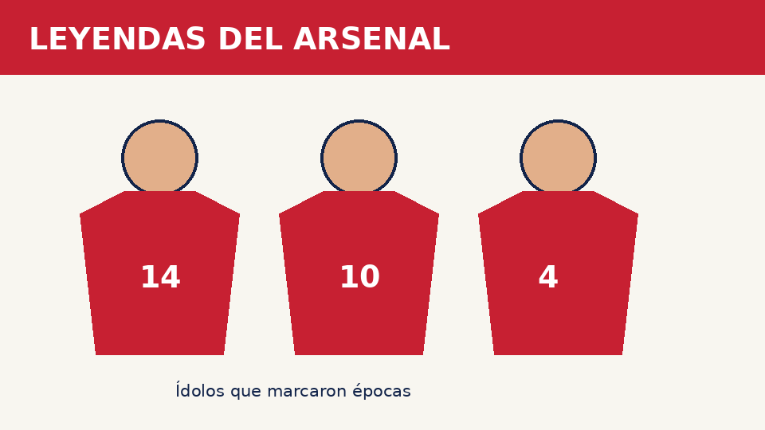

Thierry Henry
Delantero francés recordado por sus goles, velocidad y técnica. Es uno de los máximos referentes del Arsenal.
Un recorrido educativo por el club de Londres

Delantero francés recordado por sus goles, velocidad y técnica. Es uno de los máximos referentes del Arsenal.
Futbolista neerlandés destacado por su visión de juego, control del balón y creatividad.
Centrocampista francés que fue capitán del Arsenal y una pieza importante del equipo de los Invencibles.